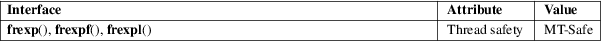

frexp, frexpf, frexpl − convert floating-point number to fractional and integral components
Math library (libm, −lm)
#include <math.h>
double
frexp(double x, int *exp);
float frexpf(float x, int *exp);
long double frexpl(long double x, int
*exp);
Feature Test Macro Requirements for glibc (see feature_test_macros(7)):
frexpf(),
frexpl():
_ISOC99_SOURCE || _POSIX_C_SOURCE >= 200112L
|| /* Since glibc 2.19: */ _DEFAULT_SOURCE
|| /* glibc <= 2.19: */ _BSD_SOURCE || _SVID_SOURCE
These functions are used to split the number x into a normalized fraction and an exponent which is stored in exp.
These functions return the normalized fraction. If the argument x is not zero, the normalized fraction is x times a power of two, and its absolute value is always in the range 1/2 (inclusive) to 1 (exclusive), that is, [0.5,1).
If x is zero, then the normalized fraction is zero and zero is stored in exp.
If x is a NaN, a NaN is returned, and the value of *exp is unspecified.
If x is positive infinity (negative infinity), positive infinity (negative infinity) is returned, and the value of *exp is unspecified.
No errors occur.
For an explanation of the terms used in this section, see attributes(7).

C11, POSIX.1-2008.
C99, POSIX.1-2001.
The variant returning double also conforms to SVr4, 4.3BSD, C89.
The program below produces results such as the following:
$ ./a.out
2560
frexp(2560, &e) = 0.625: 0.625 * 2^12 = 2560
$ ./a.out −4
frexp(−4, &e) = −0.5: −0.5 * 2^3 =
−4
Program
source
#include <float.h>
#include <math.h>
#include <stdio.h>
#include <stdlib.h>
int
main(int argc, char *argv[])
{
double x, r;
int exp;
x =
strtod(argv[1], NULL);
r = frexp(x, &exp);
printf("frexp(%g,
&e) = %g: %g * %d^%d = %g\n",
x, r, r, FLT_RADIX, exp, x);
exit(EXIT_SUCCESS);
}
ldexp(3), modf(3)